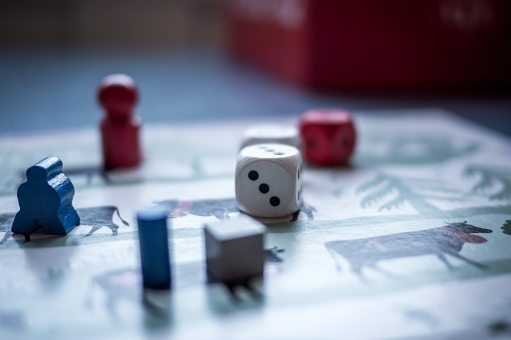

Galda spēles
Man ļoti patīk pavadīt laiku ar draugiem, spēlējot galda spēles. Nav īpaša nozīme, kuru spēli spēlēt, bet šīs aktivitātes ļauj jautri pavadīt laiku ar tuviem cilvēkiem un, tajā pašā laikā, liek padomāt.
Ēst gatavošana
Ēst gatavošana jau no bērna kājas man ir interesējusi un vienmēr mēģinu kaut ko interesantu un garšīgu uztaisīt kad ir brīvs brīdis un vēders pieprasa papildināšanu. Ir bijis darbs arī restorāna virtuvē par pavāru, bet slodze bija tik milzīga, ka šīs spējas un patiku pielietoju tikai ģimenes un tuvu draugu iepriecināšanai.

Datorspēles
Ne tikai klātienes galda spēles, bet arī attālinātās datorspēles iepriecina brīvā laikā, jo pandēmijas laikā nav īpaši citi veidi, kā pavadīt laiku ar draugiem, kā vien spēlējot un runājot caur datora ekrāniem.